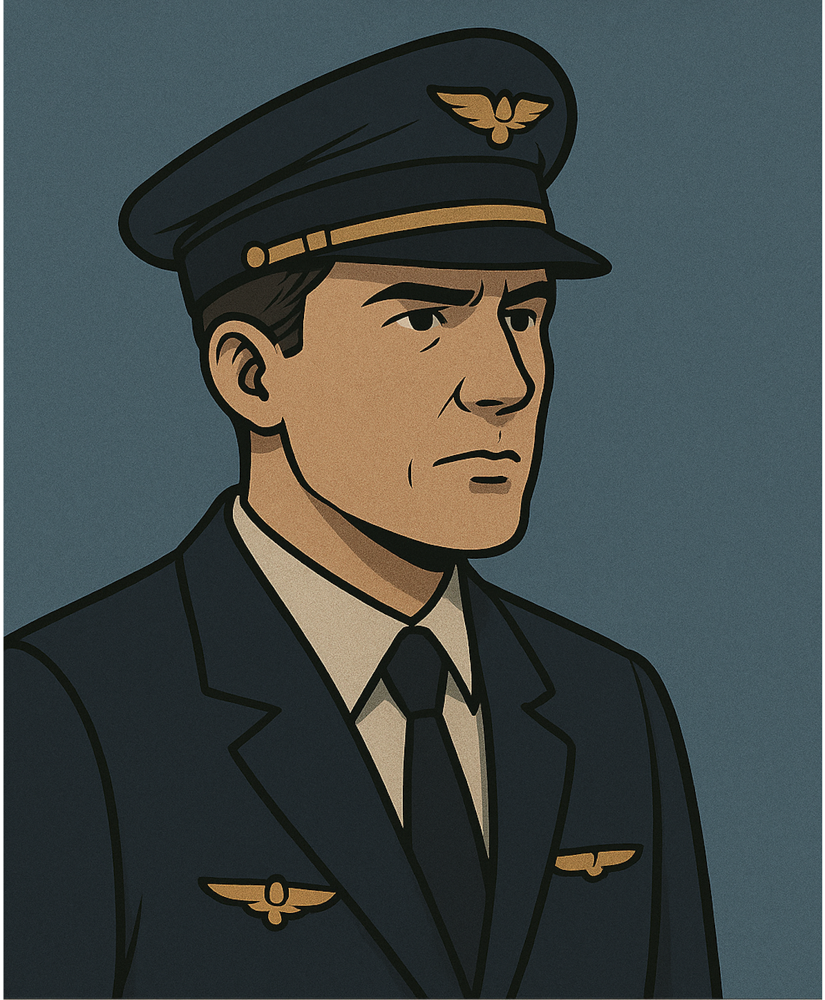
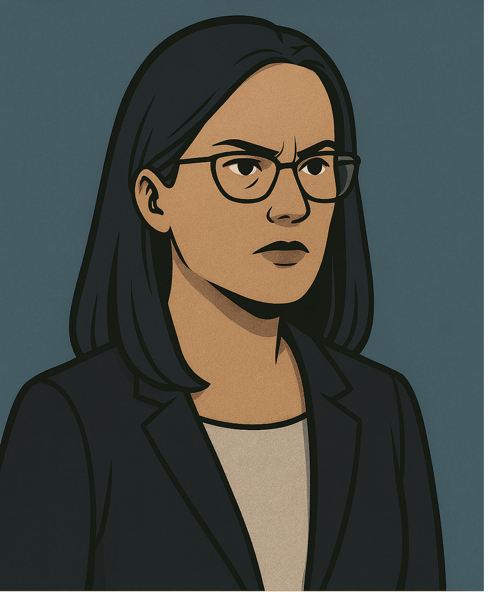
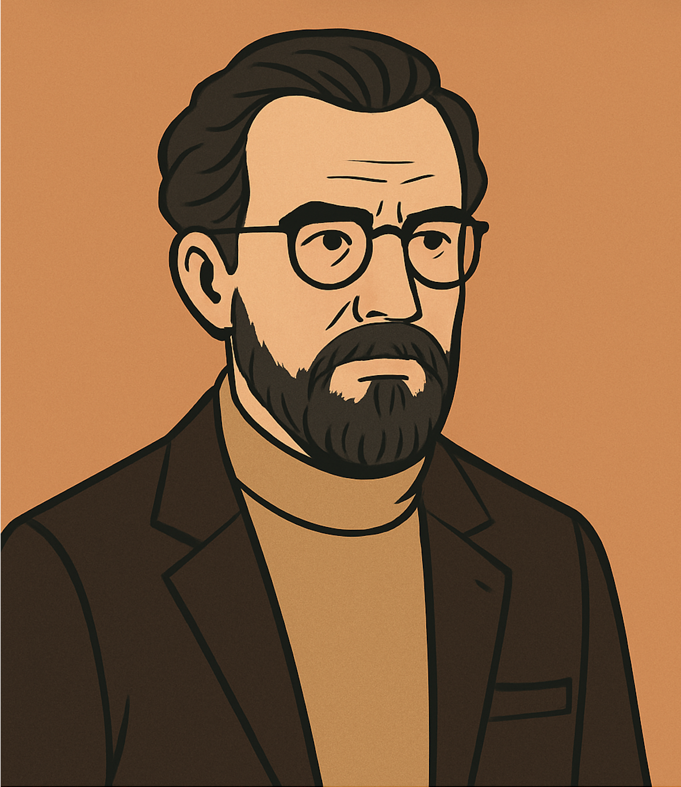

Foyer – Stimmen des Publikums

Pilotenkollege:
Er hat getan, was jeder Pilot getan hätte. Die Tat war furchtbar, aber notwendig. Zum Glück hatte Lars Koch die Kraft zu entscheiden.

Juristin:
Niemand steht über dem Gesetz. Es gibt etwas, was höher zu gewichten ist als das menschliche Gewissen – die Verfassung.

Fussballfan:
Ich war selber öfter in der Arena. Es hätte jeden treffen können. Lars Koch musste handeln!

Philosophieprofessor:
Deontologie oder Utilitarismus – das ist hier die Frage…

Feuerwehrmann:
Wenn es brennt, muss man handeln. Zu langes Abwägen ist fatal. Das nennt man „übergesetzlichen Notstand“.